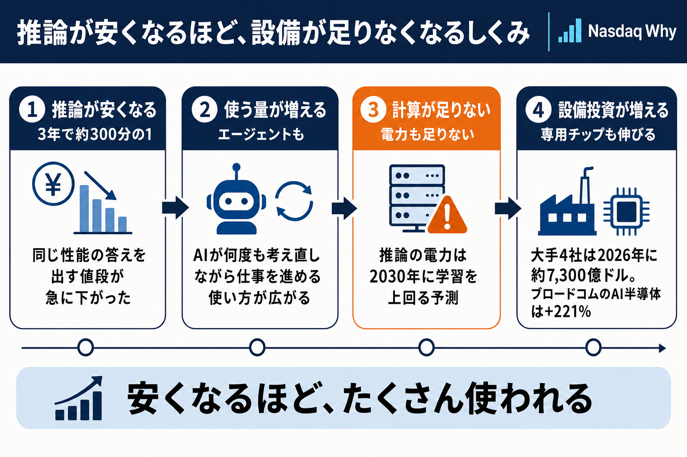
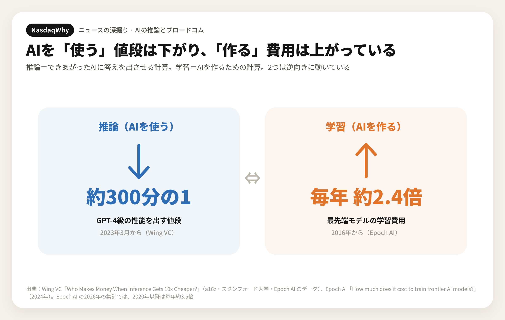
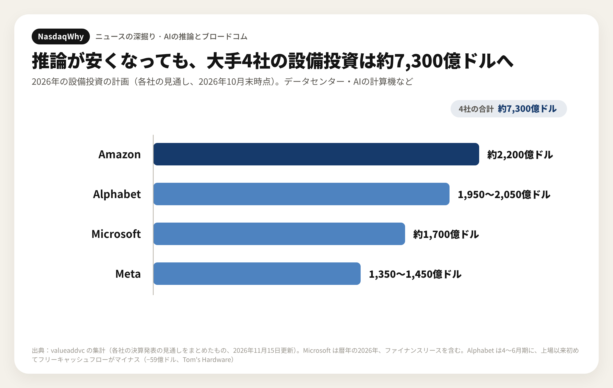
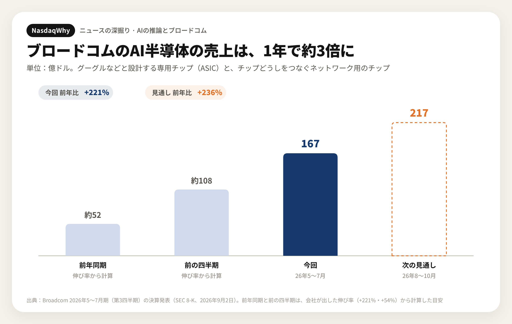
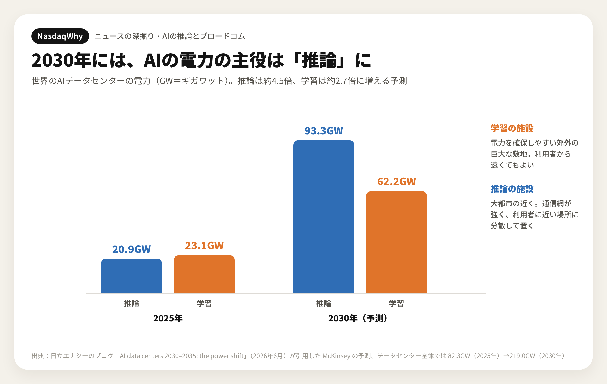

ニュースの深掘り
AIの推論は安くなっているのに、なぜ設備への支出は増えるのか？――ブロードコムのAI半導体は1年で約3倍に
AIに質問して答えを出させる計算（推論）の値段は、この3年で約300分の1になりました。それなのに、Amazon・Alphabet・Microsoft・Metaの大手4社は、2026年に合わせて約7,300億ドルを設備に投じる計画です。なぜ安くなるのに、お金はもっと使われるのか。専用チップを作るブロードコムの急成長と、データセンターの変化から見ていきます。

推論の値段は、3年で約300分の1に
AIには2つの計算があります。AIを作るための「学習」と、できあがったAIに質問して答えを出させる「推論」です。毎日AIを使うたびに動いているのは、推論のほうです。
この推論の値段が、急激に下がっています。GPT-4と同じくらいの性能の答えを出す値段は、2023年3月から約300分の1になりました（a16z・スタンフォード大学・Epoch AIのデータをまとめたWing VCの分析）。研究機関のEpoch AIによると、博士レベルの理科の問題でGPT-4並みの成績を出す値段は、1年で40分の1のペースで下がりました。ただし下がり方は問題の種類によって大きく違い、1年で9分の1〜900分の1と幅があります。
AIを作る「学習」は、逆に高くなっている
一方で、最先端のAIを作る「学習」の費用は、毎年大きくなっています。Epoch AIの分析では、最先端のモデルの学習費用は2016年から毎年約2.4倍のペースで増えてきました（2024年の分析）。2026年の集計では、2020年以降は毎年約3.5倍とさらに速まっています。学習に使う計算の量も、2020年から毎年約5倍に増えています。
つまり、AIを「使う」値段は下がり、「作る」費用は上がる。はさみのように逆向きに動いているのです。

それでも、大手4社の設備投資は増え続ける
推論が安くなれば、設備へのお金は少なくて済みそうに思えます。ところが現実は逆です。Amazon・Alphabet・Microsoft・Metaの4社は、2026年に合わせて約7,300億ドルを設備に投じる計画です（各社の見通しをまとめた valueaddvc の集計、2026年10月末時点）。
Alphabetは2026年4〜6月期に、四半期の設備投資が449億ドルと前の年の約2倍になり、本業で稼いだお金から投資を引いた現金（フリーキャッシュフロー）が、上場以来初めてマイナス（−59億ドル）になりました（Tom's Hardware）。

なぜ？――安くなると、使う量がもっと増えるから
理由は、値段が下がると使う量がそれ以上に増えるからです。LED電球で1個あたりの電気代は下がりましたが、明かりを使う場所が増え、電気の使用量は減りませんでした。AIでも同じことが起きています。
特に「エージェント」と呼ばれる、AIが何度も考え直しながら仕事を進める使い方では、1つの仕事に使う計算の量が大きく増えます。さらに、学習の費用も上がり続けているので、作る側と使う側の両方で、計算の設備が必要になっています。
「学習はGPU、推論は専用チップ」とは限らない
よく「学習はエヌビディアのGPU、推論は専用チップ」と言われますが、実際はそう単純ではありません。グーグルの最新のAI「Gemini 3 Pro」は、自社の専用チップ（TPU）で学習しました（グーグルの公式資料）。Anthropicは、グーグルのTPU、アマゾンのTrainium、エヌビディアのGPUの3種類のチップを使い分けていると説明しています。
ただし、自分で専用チップを設計できるのは、グーグル・アマゾン・マイクロソフト・メタ・OpenAIのような超大手だけです。台湾の調査会社TrendForceは、2026年の専用チップ（ASIC）の出荷が前の年より44.6%増え、GPUの16.1%増の約3倍の伸びになると予測しています。専用チップを使うAIサーバーは、2026年に出荷全体の27.8%になる見込みです。
専用チップのブロードコムが伸びる理由
エヌビディアのGPUは、どんな計算もこなせる「万能の道具」です。これに対して、ブロードコムが大手IT企業と一緒に設計する専用チップは、決まった計算だけに絞ることで、電気代とコストを下げます。グーグルのTPUがその代表例です。推論は毎日同じ種類の計算をくり返すので、専用チップの強みが出やすい分野です。
ブロードコムの2026年5〜7月期のAI半導体の売上は167億ドルで、前の年の約3倍（+221%）、前の四半期からも+54%でした。次の8〜10月期は217億ドル（+236%）を見込んでいます。ホック・タンCEOは、専用チップとネットワーク用のチップの需要が「とても強い」と説明しています。比べると、エヌビディアのデータセンター部門の売上は8〜10月期で1,076億ドル。規模はまだエヌビディアが大きいものの、伸びの速さではブロードコムが上回っています。

データセンターは「学習用」と「推論用」に分かれていく？
電力の使い方も変わります。日立エナジーが紹介したMcKinseyの予測では、世界のAIデータセンターの電力は、推論が2025年の20.9GWから2030年に93.3GWへ、学習が23.1GWから62.2GWへ増えます。2030年には、推論が学習を上回る見込みです。
置く場所の考え方も違います。学習用の施設は、電力を確保しやすい郊外の巨大な敷地が向いていて、利用者から遠くてもかまいません。推論用の施設は、答えをすぐ返すために、大都市の近くの通信網が強い場所に分散して置かれる傾向があります。今のデータセンターがすべて役割で分かれているわけではありませんが、新しく建てる施設では、役割に合わせて場所を選ぶ動きが出ています（同じブログより）。

この先の2つのシナリオ
- 使う量が増え続けるシナリオ：エージェントの利用が広がり、推論の計算が増え続けます。設備投資も続き、GPUと専用チップの両方が伸びます。電力や送電の設備の需要も大きくなります。
- 投資を見直すシナリオ：AIで稼ぐお金が投資の増え方に追いつかず、手元の現金がマイナスの状態が続きます。大手が投資のペースを落とすと、半導体の会社の売上の伸びも鈍ります。
投資家にとっての意味と、次に見るもの
「推論が安くなる＝AI関連の需要が減る」とは限りません。むしろ、安くなるほど使う量が増え、設備投資が増えてきました。見るべきなのは、値段の下がり方よりも、使う量がどこまで増えるか、そしてAIで稼ぐお金が投資に追いつくかです。
次に見るもの：ブロードコムの8〜10月期の決算（12月中旬の見込み）で、AI半導体が見通しの217億ドルに届くか。大手4社が来年1〜2月の決算で出す2027年の設備投資の計画。
次回からの予定：「エヌビディアの売上から、なぜシンガポールが消えた？」→「GPUは何年使える？減価償却でクラウド大手の利益はどう変わる？」→「AIの電気は誰が作る？（発電）」→「発電所より先に足りないもの：送電線と変圧器」→「サーバーを水で冷やす？寒い国と宇宙のデータセンター」の順に、AIを支える設備の「なぜ？」を深掘りします。
出典
- Wing VC：Who Makes Money When Inference Gets 10x Cheaper?（2026年8月）
- Epoch AI：LLM inference price trends（2025年3月）
- Epoch AI：How much does it cost to train frontier AI models?（2024年6月）
- Epoch AI：AI trends（2026年2月更新）
- valueaddvc：Big Tech AI Spending 2026（各社の設備投資の見通しの集計）
- Tom's Hardware：Alphabet goes cash flow negative for the first time（2026年7月）
- Google DeepMind：Gemini 3 Pro Model Card
- The Register：Google and Anthropic TPU deal（Anthropicの3種類のチップ）
- Tom's Hardware：The custom AI ASIC state of play（TrendForce の予測、2026年5月）
- Broadcom：2026年度第3四半期の決算発表（SEC 8-K、2026年9月2日）
- NVIDIA：2027年度第3四半期の決算発表（SEC 8-K、2026年11月17日）
- 日立エナジー：AI data centers 2030–2035: the power shift（2026年6月）